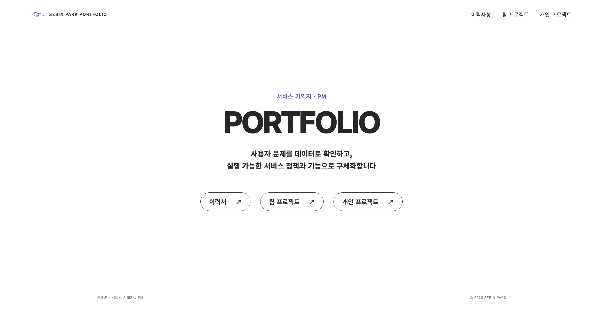
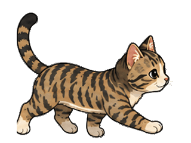

Product Planning / Personal 개발 중PM CopilotPM의 프로젝트 기획 과정을 돕는 코파일럿을 개발하고 있습니다.기획 문서 정리 · MVP 개발GitHub ↗PROJECT PLAN기획 문서에서제품의 기준을 세웁니다01프로젝트 기획서02요구사항 정의03서비스 흐름04화면 설계
Web Portfolio / PersonalSEBIN PARK Portfolio개인 브랜딩과 프로젝트 기록을 연결한 정적 포트폴리오 사이트Information Architecture · HTML · CSS · JSGitHub ↗
Flutter Desktop App / PersonalFlutter Desktop Pet화면 절전 방지 기능을 고양이의 행동으로 표현한 데스크톱 앱Flutter · macOS · WindowsGitHub ↗